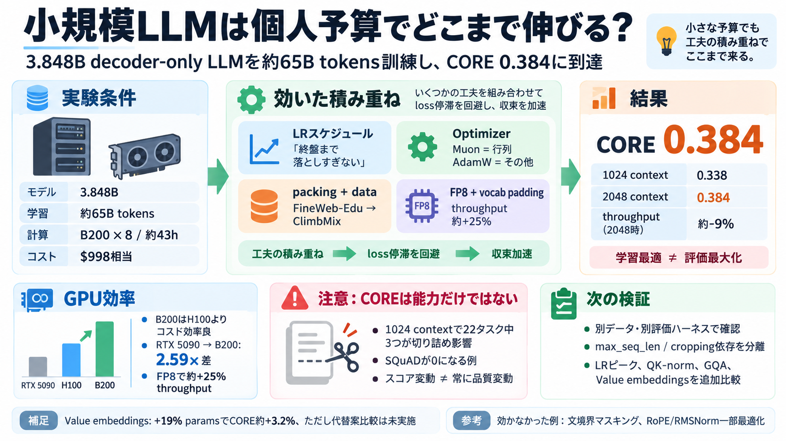

CoreWeave vs Crusoe: A GPU Cloud Pricing Comparison 2026 for H100 and B200 | Spheron Blog
Spheron's own pricing page advertises "Live rates across 5+ providers. No lock-in," billed with "per-minute billing gran…

Spheron's own pricing page advertises "Live rates across 5+ providers. No lock-in," billed with "per-minute billing gran…
B200 edges H100 at 89 tok/s/user on MiniMax M2.5/M2.7 — $0.15 per million tokens versus $0.40, a 167% cost-per-token gap…
Key Takeaway: Even assuming future cloud B200 pricing matches current H100 rates (a big assumption!), self-hosting our B…
Faster convergence than AdamW (~35% improvement on NanoGPT speedruns; at 1.5B scale: 10 vs 13.3 8×H100-hours) Better st…
Our educational implementation consists of two key components: ### The Newton-Schulz Orthogonalization [...] ### The Mu…